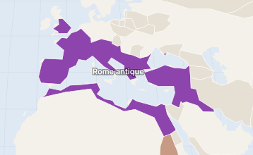
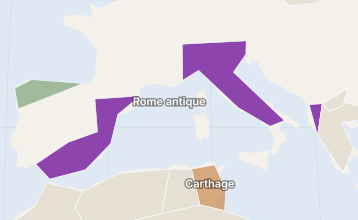
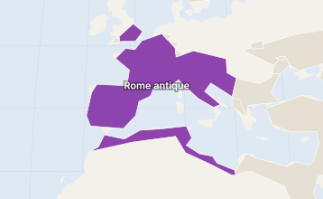

Antiquité · Europe · Italie
Rome antique
−753 → 476 · environ 1 200 ans
Une petite cité du Latium devenue, en sept siècles de conquêtes, le premier empire à unifier tout le pourtour de la Méditerranée.
Maquette : contenu d'exemple rédigé avec soin, mais à vérifier ligne à ligne au sprint 11 (pilote).

L'Empire vers 100 apr. J.-C. (apogée en 117) Voir l'évolution
Repères
- Capitale
- Romepuis Milan (286) et Ravenne (402) pour l'Occident
- Régimes
- Royauté, République, Empirevoir les dirigeants
- Langues
- Latingrec dans la moitié orientale
- Religion
- Polythéismepuis christianisme, religion d'État en 380
- Apogée
- 117, sous Trajanenviron 5 millions de km²
- Population
- 50 à 70 millionsestimations, IIe siècle
- Monnaie
- Denier, sestercepuis le solidus d'or (IVe s.)
- Durée
- Environ 1 200 ansdont 500 ans d'Empire
- Aujourd'hui
- Une quarantaine de pays actuelsde l'Angleterre à l'Égypte, du Portugal à la Syrie ; berceau : l'Italie
L'essentiel en 5 points
- Une cité-État du Latium qui, de conquête en conquête, finit par dominer toute la Méditerranée, qu'elle appelle Mare nostrum (« notre mer »).
- Trois régimes se succèdent : la royauté, la République (le Sénat et deux consuls élus chaque année), puis l'Empire fondé par Auguste en −27.
- Une armée de métier, des routes et des villes nouvelles unifient un territoire immense : c'est la Pax Romana, deux siècles de paix relative.
- Le latin, le droit romain et les techniques de construction (aqueducs, béton) marquent durablement l'Europe.
- L'Empire est partagé en 395. L'Occident disparaît en 476 ; l'Orient continue jusqu'en 1453 sous le nom d'Empire byzantin.
5 dates à retenir
- 753 av. J.-C.Fondation de RomeSelon la tradition, par Romulus.
- 509 av. J.-C.Naissance de la RépubliqueLe dernier roi est chassé.
- 15 mars 44 av. J.-C.Assassinat de CésarLa République ne s'en relève pas.
- 27 av. J.-C.Octave devient AugusteDébut de l'Empire.
- 476Fin de l'Empire d'OccidentL'Orient continue : l'Empire byzantin.
Personnages clés
Ce qu'il en reste aujourd'hui
À savoir
Les rois et la date de fondation viennent de la tradition romaine, écrite plusieurs siècles plus tard : on parle de récits en partie légendaires.
« Chute de Rome » : beaucoup d'historiens préfèrent parler de transformation du monde romain, car l'Empire d'Orient dure encore mille ans.
Fil de l'histoire
Sources
Dernière relecture : octobre 2026 · Signaler une erreur
5 grandes périodes
−753 → −509 · environ 250 ansLa Royauté
Selon la tradition, Rome est gouvernée par sept rois, dont les trois derniers sont étrusques. La ville s'organise : premiers temples, assèchement du Forum, institutions comme le Sénat. Le règne du dernier roi, Tarquin le Superbe, jugé tyrannique, se termine par son expulsion.
- 753 av. J.-C.Fondation de Rome
- 509 av. J.-C.Expulsion du dernier roi
−509 → −27 · environ 480 ansLa République
Le pouvoir est partagé entre des magistrats élus pour un an, dont deux consuls, et le Sénat. Rome conquiert l'Italie, puis bat Carthage lors des guerres puniques. Mais les conquêtes enrichissent une minorité et déclenchent un siècle de guerres civiles, de Marius et Sylla jusqu'à César.
- 264–146 av. J.-C.Guerres puniques
- 58–50 av. J.-C.Guerre des Gaules
- 49 av. J.-C.Passage du Rubicon
- 15 mars 44 av. J.-C.Assassinat de César
- 31 av. J.-C.Bataille d'Actium
−27 → 235 · environ 260 ansLe Haut-Empire
Auguste concentre les pouvoirs tout en gardant l'apparence de la République. Deux siècles de Pax Romana suivent : villes, routes et commerce prospèrent. L'Empire atteint sa plus grande étendue sous Trajan en 117.
235 → 284 · environ 50 ansLa crise du IIIe siècle
Plus d'une vingtaine d'empereurs, souvent proclamés par leurs soldats, se succèdent en un demi-siècle. Invasions aux frontières, guerre contre les Perses et crise de la monnaie fragilisent l'Empire.
284 → 476 · environ 190 ansLe Bas-Empire
Dioclétien réorganise l'Empire, Constantin se convertit au christianisme et fonde Constantinople. Après le partage de 395, l'Occident, affaibli par les invasions, disparaît en 476.
- 378Bataille d'Andrinople
- 395Partage de l'Empire
- 476Fin de l'Empire d'Occident
Trois régimes : un roi, puis deux consuls élus chaque année sous la République, puis un empereur. Touchez un nom pour son aperçu ; ● = fiche complète.
−753 → −509 · selon la traditionLes sept rois7
−509 → −27 · pouvoir collégialLa République : pas de chef unique
Chaque année, deux consuls sont élus et contrôlés par le Sénat. En cas de crise, un dictateur peut recevoir les pleins pouvoirs pour six mois. Plutôt qu'une liste de centaines de consuls, voici les figures qui ont marqué le pouvoir :
−27 → 68Les Julio-Claudiens5
68 → 96Année des quatre empereurs et Flaviens6
96 → 192Les Antonins6 + 1
193 → 235Les Sévères4
Également : Geta (211, avec Caracalla) et Macrin (217 → 218, hors dynastie).
235 → 284La crise du IIIe siècle20+
Plus d'une vingtaine d'empereurs en 50 ans, souvent proclamés par leurs soldats. La liste complète sera affichée ici ; quelques repères :
284 → 476De Dioclétien à la fin de l'Occidentrepères
Société
D'abord une division entre libres et esclaves. Parmi les libres, les citoyens romains (droit de vote, protection en justice) se distinguent des étrangers. La citoyenneté s'étend peu à peu, jusqu'à tous les hommes libres de l'Empire en 212. Les esclaves, très nombreux, travaillent aux champs, dans les mines et les maisons.
Économie
L'agriculture domine (blé, vigne, olivier). Sous l'Empire, la Méditerranée devient un immense marché : blé d'Égypte, huile d'Espagne, vin de Gaule. Une même monnaie, le denier, circule partout.
Religions
Un polythéisme civique : Jupiter, Junon et Minerve sur le Capitole, et des cultes domestiques. Sous l'Empire s'ajoute le culte de l'empereur. Le christianisme, d'abord persécuté, est toléré en 313 puis devient religion d'État en 380.
Sciences et techniques
Les Romains excellent dans l'ingénierie : routes, ponts, ports, et un béton capable de durcir sous l'eau.
Arts et monuments
Vie quotidienne
En ville, la plupart des gens vivent dans des immeubles de location (insulae), les riches dans une domus. Les thermes publics, les courses de chars et les combats de gladiateurs rythment la vie.
5 guerres majeures. Chacune aura sa propre page (phases, cartes animées, batailles) avec l'onglet Guerres.
Cadre vert = vainqueur.

Après la deuxième guerre punique, Rome domine l'Italie et a pris à Carthage la Sicile, la Sardaigne et une partie de l'Espagne.
L'Empire entoure toute la Méditerranée ; il atteint son étendue maximale en 117.

L'Empire est partagé depuis 395 : en couleur, l'Occident, qui disparaît en 476. L'Orient continue sous le nom d'Empire byzantin.